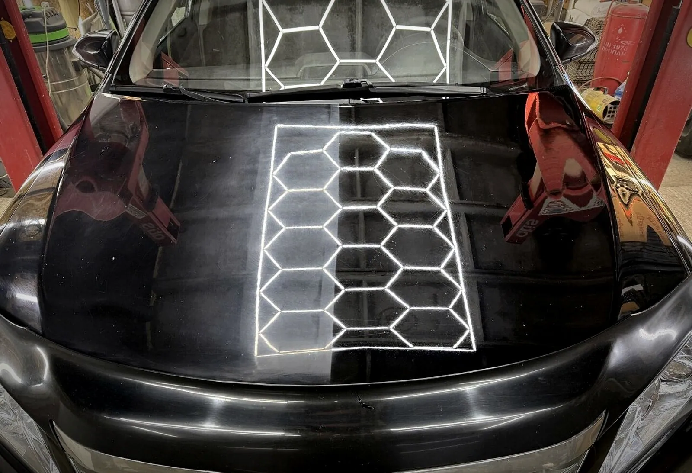
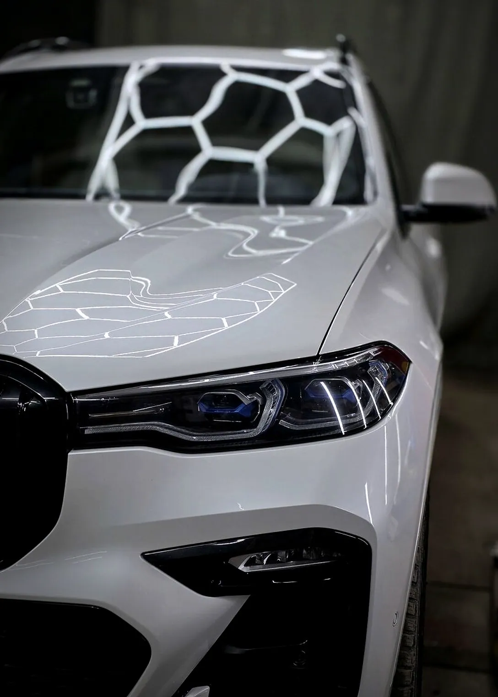
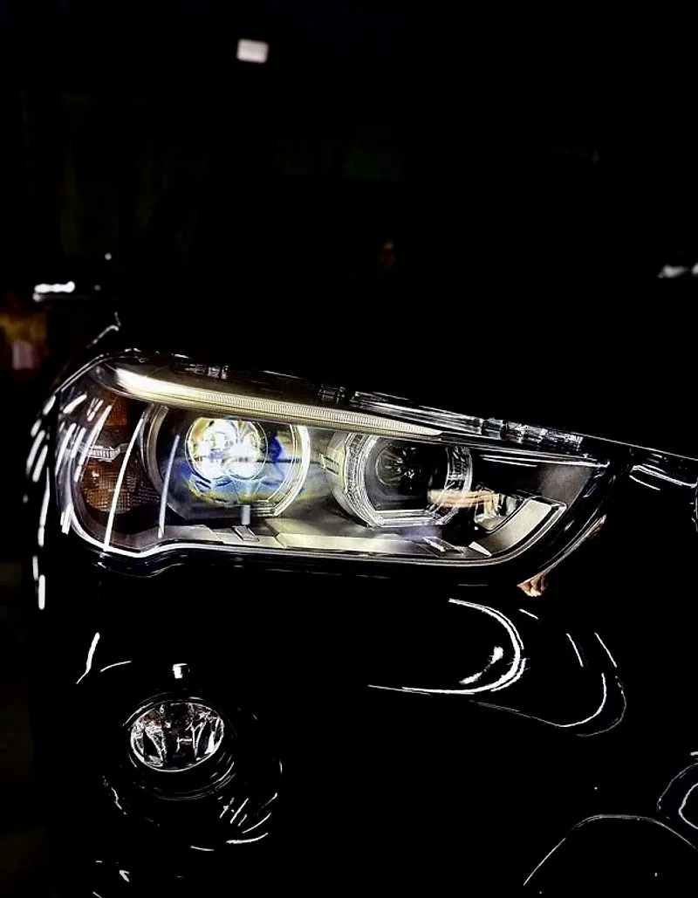
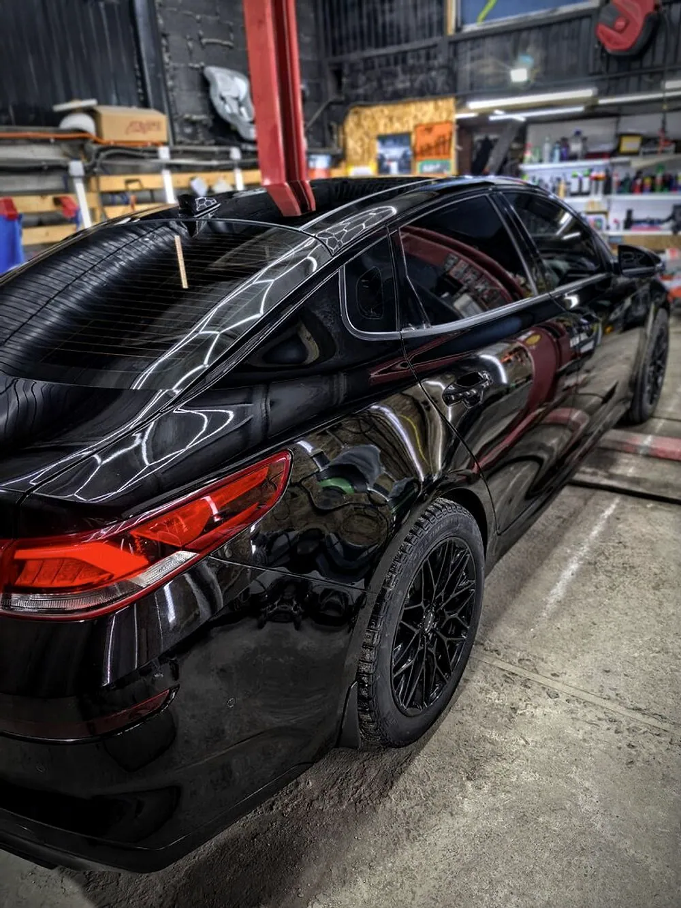
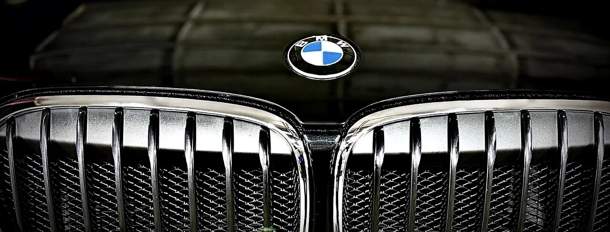

Очень советую этот автотехцентр! Полировка кузова получилась просто вау, машина блестит как новенькая. А ещё заодно сделали подвеску — и это тоже на уровне. Не надо мотаться по разным сервисам — всё в одном месте.

Автотехцентр и детейлинг · Красноярск
Ремонт и детейлинг в одном месте.
GS-Auto на Северном шоссе, 9/2: диагностика и ремонт иномарок, полировка, бронирование фар, химчистка, заправка кондиционера. Ежедневно с 10 до 22 — запись онлайн за минуту.
01Цены
Услуги и цены
Цены «от» — точная зависит от состояния автомобиля и объёма работ; назовём после осмотра или по телефону. Работы — только после согласования.
- Диагностика и ремонт автомобиляКомпьютерная диагностика, АКПП и вариаторы, посторонние шумыот 1 500 ₽1 ч
- Ремонт подвескиСтуки, скрипы, ходовая частьот 1 000 ₽2 ч
- Замена масла и ТОот 1 000 ₽1 ч
- Заправка кондиционераот 2 000 ₽1 ч
- Сварочные работыВыхлопная система, глушительот 1 000 ₽1 ч
- Полировка кузоваот 10 000 ₽8 ч
- Полировка фарУбираем мутность и желтизну, возвращаем светот 1 800 ₽1 ч
- Бронирование фар плёнкойЗащита от сколов и пескоструяот 3 000 ₽2 ч
- Установка би-лед линзот 18 000 ₽4 ч
- Химчистка салонаСиденья, потолок, пол, двери; пятна и запахиот 8 000 ₽6 ч
- Химчистка отдельных элементовот 1 000 ₽1 ч
- Предпродажная подготовкаЧтобы машина продалась быстрее и дорожеот 3 000 ₽3 ч
02Работы
Фото из нашего бокса




03Почему мы
Почему GS-Auto
- 01
Всё в одном месте
Ремонт подвески, полировка кузова и запчасти — без поездок по разным сервисам. Так пишут и клиенты в отзывах.
- 02
5,0 в 2ГИС — 52 оценки
И 4,9 на Яндекс Картах. Так оценивают те, кто уже у нас был.
- 03
Сначала диагностика — потом ремонт
Объясняем простыми словами, что нужно сделать, и называем цену. Работы — только после согласования.
- 04
Ежедневно до 22:00
Без выходных, с 10 до 22 — удобно заехать после работы.
04Как это работает
От записи до готовой машины
- Выбираете услугу и время
Онлайн, без звонка — свободное время видно сразу.
- Получаете подтверждение
Напомним о записи накануне.
- Приезжаете на Северное шоссе, 9/2
Вход справа от автомойки «Эстет», есть парковка.
- Осмотр и согласование
Цену называем до начала работ, делаем — и отдаём машину.
05Отзывы
5,0 из 5 — что пишут гости
Обратился с ремонтом подвески. Срочно нужна была диагностика и ремонт выявленных неполадок. Все работы выполнены отлично, в короткие сроки! По запчастям тоже проблем никаких. Теперь ничего не скрипит, не стучит.
Всё прошло быстро и отлично, хороший мастер, угостил чаем, рекомендую.
06Вопросы
Частые вопросы
Какие машины обслуживаете?
Легковые иномарки — японские, корейские и европейские: Toyota, Honda, Kia, Hyundai, Mazda, BMW, Mercedes-Benz, Volkswagen и другие.
Почему цены «от»?
Точная цена зависит от состояния автомобиля и объёма работ. Назовём после осмотра или по телефону — и только после согласования начнём.
Можно купить запчасти у вас?
Да, подбираем и продаём запчасти для иномарок. Отдел автозапчастей: +7 963 191-12-36.
Когда вы работаете?
Ежедневно с 10:00 до 22:00, без выходных.
07Контакты
Как нас найти
- Адрес
- Северное шоссе, 9/2, КрасноярскВход справа от автомойки «Эстет»
- Часы работы
- Ежедневно10:00–22:00
- Телефон
- +7 923 367-67-67
Северное шоссе, 9/2, Красноярск